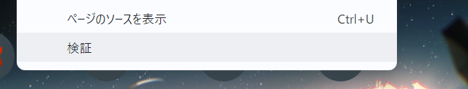
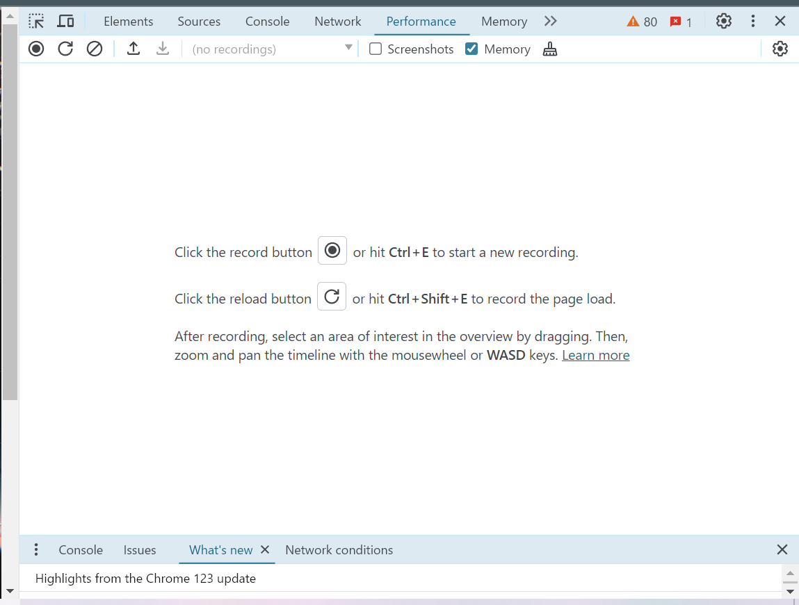
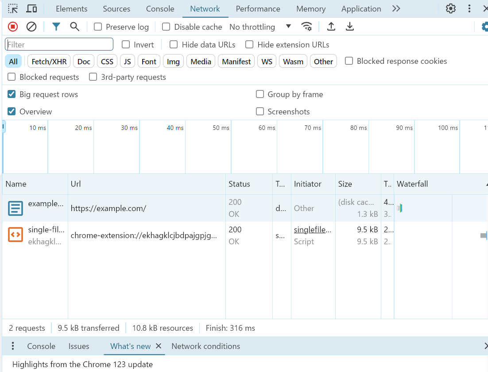
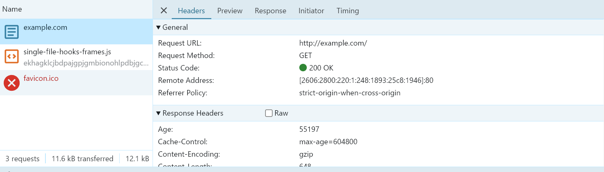
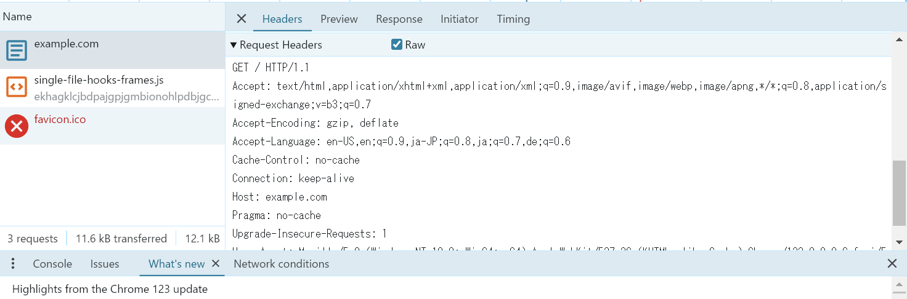

HTTP による通信を触ってみる
1. HTTP とは
HTTP(Hypertext Transfer Protocol) は、サーバーとクライアントが通信するためのプロトコルです。 クライアントとは、主に Chrome, Firefox, Safari, Edge などのウェブブラウザのことを指します。 サーバーとは、コンテンツを供給するもの（server）で、HTTP 通信を受け入れるコンピューターのことを指します。 プロトコルとは、やりとりの方法を定めたルール集のことです。たとえば、「通信の一単語目には、別に定められた特定の単語しか使ってはいけない」などです。
まとめると、HTTP とは、「コンテンツを供給するもの（server）で、HTTP 通信を受け入れるコンピューターであるサーバーと、主に Chrome, Firefox, Safari, Edge などのウェブブラウザなどのクライアントが通信するための、やりとりの方法を定めたルール集」です。
私たちが普段 Web (World Wide Web) と呼んでいるものは、この HTTP を使ってリソースのやり取りをしていることが多いです。
2. コマンドラインでウェブサイトを取得してみよう
curl コマンドを使ってウェブサイトを取得してみます。 以下のコマンドを打ってみてください。
curl http://example.com
すると、<!doctype html>から始まる結果が HTML 文書が出力されたと思います。
これは、curl コマンドを使って、http://example.com という URL にリクエストを送り、その結果として HTML 文書を得ています。
実際にブラウザで http://example.com にアクセスしたときの画面と見比べてみると、This domain is for use in illustrative examples in documents.などの同じ文字列が見つかると思います。
もう少し詳しく見てみましょう。
curl には、verbose オプション（-v）があります。
curl -v http://example.com
すると、HTML の出力の前に、以下のような文字列が出力されたと思います。
* Trying 93.184.216.34:80...
* Connected to example.com (93.184.216.34) port 80 (#0)
> GET / HTTP/1.1
> Host: example.com
> User-Agent: curl/7.81.0
> Accept: */*
>
* Mark bundle as not supporting multiuse
< HTTP/1.1 200 OK
< Accept-Ranges: bytes
< Age: 7831
< Cache-Control: max-age=604800
< Content-Type: text/html; charset=UTF-8
< Date: Mon, 01 Apr 2024 12:11:11 GMT
< Etag: "3147526947"
< Expires: Mon, 08 Apr 2024 12:11:11 GMT
< Last-Modified: Thu, 17 Oct 2019 07:18:26 GMT
< Server: ECS (sed/5889)
< Vary: Accept-Encoding
< X-Cache: HIT
< Content-Length: 1256
<
このうち、>が行頭についている行は、手元の端末からサーバーに送られた HTTP リクエストの一部です。
<が行頭にある行は、サーバーから送られてきた HTTP レスポンスの一部です。
HTTP メッセージの読み方は、HTTP メッセージ | MDNを参考にしてください。
さしあたり、以下の三点をわかっておいてほしいです。
- HTTP メッセージは書き方が決められている
- HTTP リクエストには、メソッドと呼ばれる部分がある
- HTTP リクエストとレスポンスには、ヘッダーと呼ばれる部分がある
3. HTTP をしゃべってみよう
telnet を使って、HTTP をしゃべってみます。 ターミナルを開き、以下のように入力してください。
$ telnet example.com 80
すると、telnet の対話モードに入ります。 以下の HTTP リクエストをコピーしてはりつけてみるか、手で入力してみてください。
GET / HTTP/1.1
Host: example.com
User-Agent: curl/7.81.0
Accept: */*
そして、改行を二回入力すると、HTML レスポンスが返ってくると思います。
4. ブラウザが送っているリクエストを見てみよう
ブラウザには検証画面と呼ばれる、内部の挙動をある程度まで確認できるツールがあります。 検証画面を使って、ブラウザがどのようにウェブサイトのデータを取得しているのかを見てみましょう。
以降では、Google Chrome を想定して話を進めますが、他の主要なブラウザでも同じことはできます。 お使いのブラウザの検証画面の見方は、各自で調べてください。
4.1. 検証画面を開く
ブラウザ上で右クリックするとポップアップでメニューが開きます。 その中から、「検証」という画面を選んでください。 
すると、以下のような画面が開きます。上側に、Element, Sources, Console などの文字が表示されていれば大丈夫です。設定次第で、英語以外の項目名で表示されているかもしれません。 
4.2. 検証画面でリクエストを見る
検証画面を開いているタブの URL バーに、次の URL を入力して、エンターキーを押してください。
その後、検証画面のネットワークタブを選択してください。 すると、以下のような画面になっていると思います。

中段あたりに表示されている項目が、一つ一つの HTTP リクエストを表します。 表示された項目の中の、 Name が example.com、 Type が document となっている列をクリックしてください。 すると詳細画面が開き、Headers のタブでどのようなヘッダーが送られ、どのようなヘッダーが返されているかが確認できます。

curl や telnet で送ったリクエストに含まれていたヘッダーと見比べて、同じものや異なるものを見つけてみましょう。
Raw option が表示されている人は、それを有効にすると、普通のテキスト形式でリクエスト・レスポンスを確認できます。 ただ、手元で確認したときに、同じ Chrome のバージョンでも表示される場合とされない場合がありました。出現条件が分かっていないので、知っている人がいたら教えてください。 
5. まとめ
クライアントとサーバーの通信方式を規定している HTTP について、実際に自分でリクエストを作って送ってみたり、ブラウザから送られるリクエストを観察しました。 HTTP メッセージでどのようなデータが送られているのかがイメージできるようになっていればと思います。
6. 確認課題
理解度を確かめるための問題です。
6.1. HTTP メソッド
curl http://example.comで送られる HTTP リクエストのメソッドはなんでしょうか？
6.2. Headers
telnet で example.com にリクエストを送った時に、最低限必要なヘッダーはどれでしょうか？（1つかもしれませんし、複数あるかもしれません） HTTP リクエストをいろいろと編集して、試してみてください。
このように、HTTP メッセージを手でいじることで、ブラウザの中で行われているクライアントとサーバーのやりとりの感覚をつかんでもらえればと思います。
6.3. 検証画面
example.com 以外のサイトでも検証画面を開いて通信を確認してみましょう。 たとえば Type が document のもの以外に、どのようなファイルがやりとりされていますか？ また、GET メソッド以外のリクエストが送られているサイトはありますか？